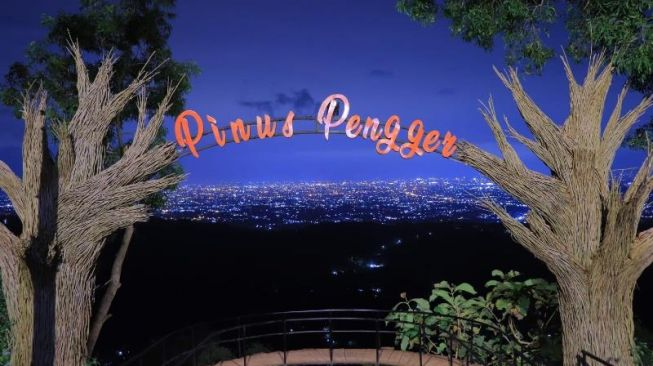

Hutan Pinus Pengger
Hutan Pinus Pengger hadir untuk kamu para pecinta fotografi, selain memiliki alam yang sangat sejuk dan teduh dengan rindangnya pohon pinus. Di Hutan Pinus Pengger juga tersedia banyak spot foto yang Instagramable banget.Alamat Hutan Pinus Pengger berada di Desa Terong, Kecamatan Dlingo, Kabupaten Bantul, Daerah Istimewa Yogyakarta. Lokasinya berada di bagian paling utara dari Kecamatan Dlingo.
 Fasilitas di Hutan Pinus Pengger:
Fasilitas di Hutan Pinus Pengger:
 Saat ini jam operasional Hutan Pinus Pengger dibuka setiap hari Senin hingga Minggu, mulai pukul 07.00 hingga pukul 21.00 waktu setempat. Waktu terbaik mengunjungi Hutan Pinus Pengger ialah ketika malam hari dimana spot fotonya bertabur bintang.